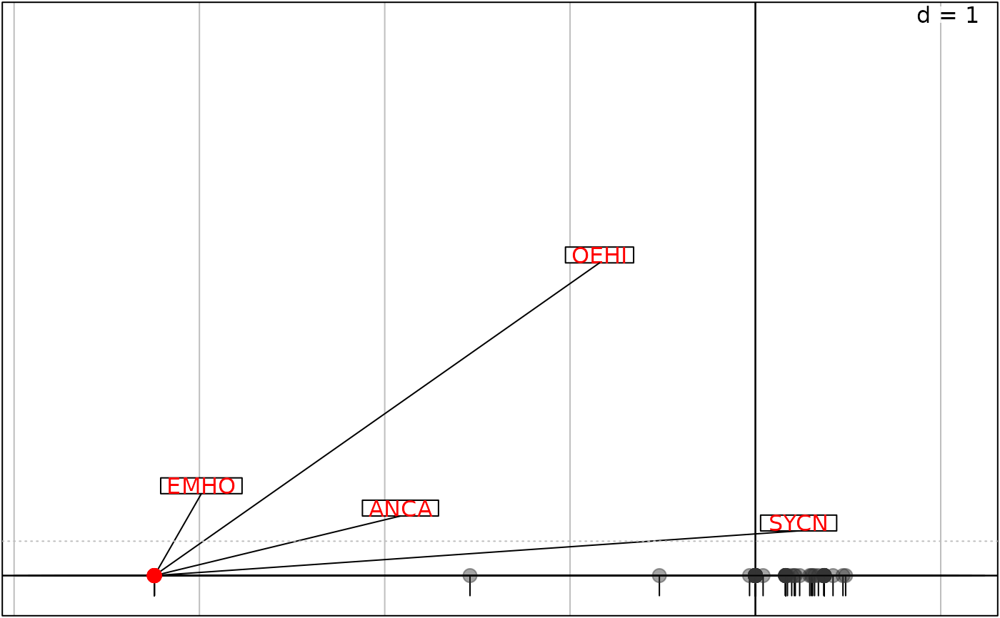
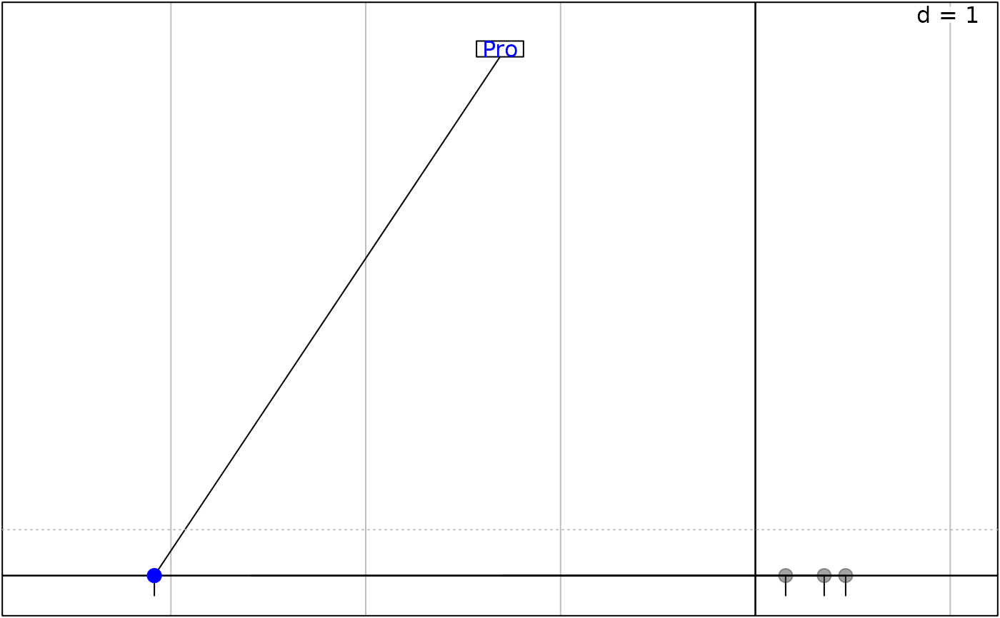
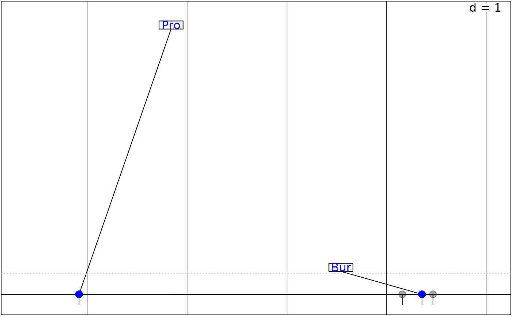
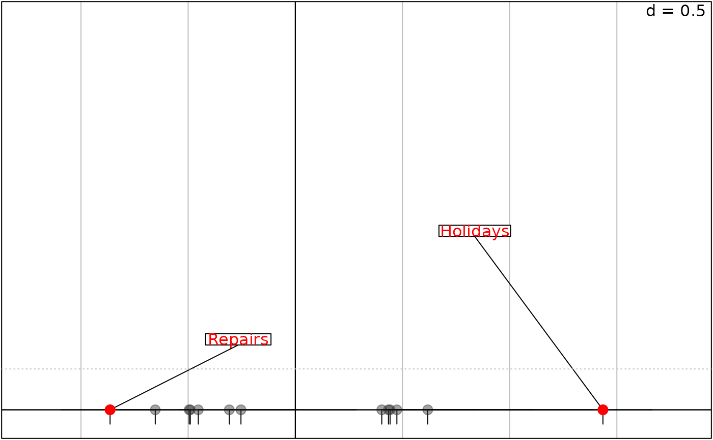
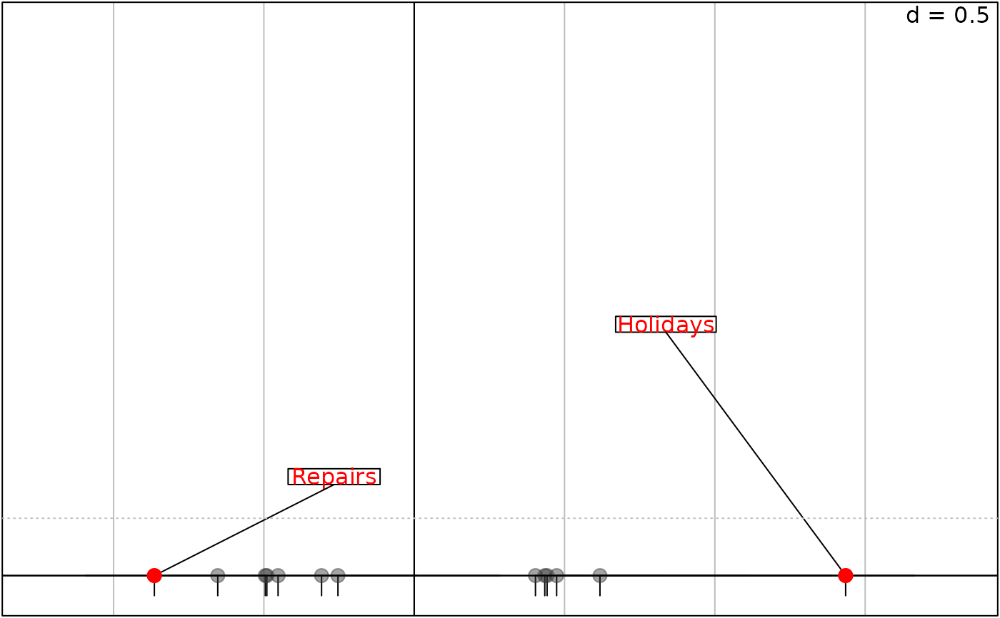

Display the decomposition of inertia which measure the contributions of rows/columns in mutivariate methods
plot.inertia.RdS3 method to display the decomposition of inertia (inertia object)
which measure the contributions of rows/columns in mutivariate methods
(dudi objects from ade4)
Usage
# S3 method for class 'inertia'
plot(x, xax = 1, yax = 2, threshold = 0.1,
contrib = c("abs", "rel"), type = c("label", "cross", "ellipse", "both"),
ellipseSize = 1.5, posieig = "none", plot = TRUE,
storeData = TRUE, pos = -1, ...)
# S3 method for class 'inertia'
score(x, xax = 1, threshold = 0.1, contrib = c("abs", "rel"),
posieig = "none", pos = -1, storeData = TRUE, plot = TRUE, ...)Arguments
- x
an object of the
dudiclass; it must be the output of a correspondance analysis (coaobject).- xax
an integer indicating which column of
xis plotted on the x-axis- yax
an integer indicating which column of
xis plotted on the y-axis. Ifyaxis equal toxax, a one-dimensional graph is display.- threshold
a numeric value containing the contribution threshold (between 0 and 1) at which points should be drawn on the graphic. Low contribution points will be represented by a grey point and without label. When the contributions are displayed on a single axis, a dotted line describes the contribution threshold.
- contrib
a character value indicating which contributions are plotted:
absfor absolute contributions (rows/columns involved in the factor axis/map construction) andrelfor relative contribution (quality of rows/columns representation on the factor axis/map).- type
a character value indicating which type represents contribution. Labels size (
label), crosses size(cross) or ellipses size (ellipse) can be proportional to the contributions. Iftypeisboth, crosses and ellipses both have sizes proportional to the contributions.- ellipseSize
a positive number for ellipse size when
typeisellipse- posieig
a character value or a two-length numeric vector (in normalized parent coordinates
npcfrom 0 to 1) ornonevalue indicating the position of the eigenvalues bar plot.- plot
a logical indicating if the graphics is displayed
- storeData
a logical indicating if the data should be stored in the returned object. If
FALSE, only the names of the data arguments are stored- pos
an integer indicating the position of the environment where the data are stored, relative to the environment where the function is called. Useful only if
storeDataisFALSE- ...
additional graphical parameters (see
adegparandtrellis.par.get)
Author
Clément Claustre, Anne-Béatrice Dufour, Aurélie Siberchicot aurelie.siberchicot@univ-lyon1.fr and Stéphane Dray
Examples
# First example
data(bf88, package = "ade4")
coa1 <- ade4::dudi.coa(bf88$S1, scannf = FALSE, nf = 3)
###### row=T / col=F
res11 <- ade4::inertia(coa1, row = TRUE, col = FALSE, nf = 3)
g111 <- plot(res11, threshold = 0.06)
g112 <- plot(res11, threshold = 0.06, xax = 1, yax = 3)
g12 <- plot(res11, threshold = 0.06, plabels.boxes.draw = TRUE, plines.lwd = 0,
light_row.ppoints.cex = 0, posieig = "bottomleft")
#> Error in plot.inertia(res11, threshold = 0.06, plabels.boxes.draw = TRUE, plines.lwd = 0, light_row.ppoints.cex = 0, posieig = "bottomleft"): object 'coa1' not found
g13 <- score(res11, threshold = 0.06)

names(g13)
#> [1] "light_row" "heavy_row" "contribution"
g14 <- score(res11, xax = 2, threshold = 0.06)
###### row=F / col=T
res12 <- ade4::inertia(coa1, row = FALSE, col = TRUE, nf = 2)
res12$col.abs
#> Axis1 Axis2 Axis3
#> Pol 0.8743973 5.1626961 90.27575579
#> Bur 7.8110473 26.3922063 9.14870165
#> Pro 90.4867942 0.8961601 0.01369376
#> Cor 0.8277612 67.5489375 0.56184880
idx <- which(res12$col.abs[, 1]/100 >= 0.1 | res12$col.abs[, 2]/100 >= 0.1)
rownames(res12$col.abs[idx, ])
#> [1] "Bur" "Pro" "Cor"
coa1$co[idx, ]
#> Comp1 Comp2 Comp3
#> Bur 0.3532161 0.6219892 -0.30249951
#> Pro -3.0848713 0.2941009 0.03003066
#> Cor 0.1552816 -1.3438037 0.10123630
g15 <- plot(res12)
g16 <- score(res12, threshold = 0.08)

g17 <- score(res12, threshold = 0.07)

########################################
########################################
# Second example
data(housetasks, package = "ade4")
coa2 <- ade4::dudi.coa(housetasks, scann = FALSE)
###### row=T / col=F
res21 <- ade4::inertia(coa2, row = TRUE, col = FALSE)
g21 <- plot(res21)
g22 <- score(res21)
 g23 <- score(res21, xax = 2)

###### row=F / col=T
res22 <- ade4::inertia(coa2, row = FALSE, col = TRUE)
g24 <- plot(res22, plabels.cex = 2)
names(g24)
#> [1] "light_col" "heavy_col"
g25 <- plot(res22, posieig = "topleft")
#> Error in plot.inertia(res22, posieig = "topleft"): object 'coa2' not found
names(g25)
#> Error: object 'g25' not found
g26 <- plot(res22, heavy_col.plabels.box.draw = TRUE,
light_col.ppoints.col = "purple")
g27 <- plot(res22, type = "both")
g28 <- plot(res22, type = "ellipse", ellipseSize = 3, plabels.col = "black",
pellipse.col = "purple", pellipses.border = "black")
g23 <- score(res21, xax = 2)

###### row=F / col=T
res22 <- ade4::inertia(coa2, row = FALSE, col = TRUE)
g24 <- plot(res22, plabels.cex = 2)
names(g24)
#> [1] "light_col" "heavy_col"
g25 <- plot(res22, posieig = "topleft")
#> Error in plot.inertia(res22, posieig = "topleft"): object 'coa2' not found
names(g25)
#> Error: object 'g25' not found
g26 <- plot(res22, heavy_col.plabels.box.draw = TRUE,
light_col.ppoints.col = "purple")
g27 <- plot(res22, type = "both")
g28 <- plot(res22, type = "ellipse", ellipseSize = 3, plabels.col = "black",
pellipse.col = "purple", pellipses.border = "black")